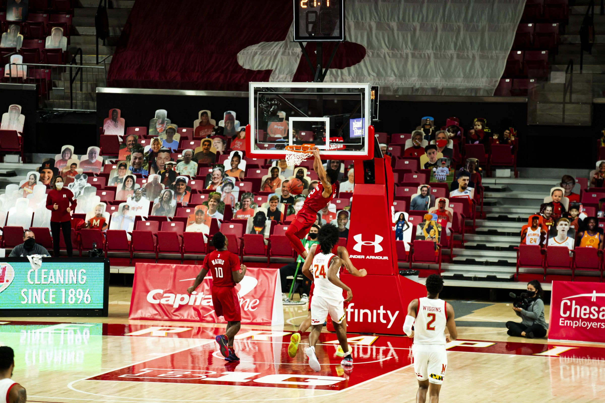
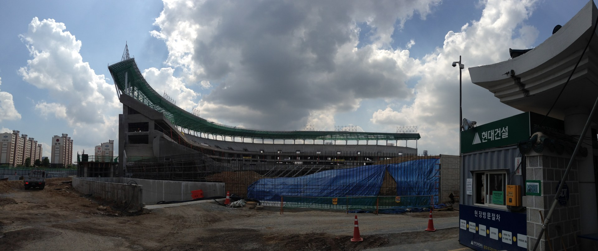

00–12분
OTT의 개념·기술·수익모델
OTT와 VOD는 같은 말인가?
유원대학교 · 최영진 교수 / 4학년 전공
스포츠와 OTT — 화면 너머의 관계를 읽다.

In the moment.50 MINUTES / 20 CHAPTERS / 2026.11.08
01–03 MIN / 2분 · 수업 지도
학습 흐름OTT의 개념·기술·수익모델
핵심 질문OTT와 VOD는 같은 말인가?
학습 흐름발전·플랫폼 역할·스포츠의 가치
핵심 질문왜 OTT가 생중계를 원할까?
학습 흐름국내외 중계권 사례·손익 실습
핵심 질문중계권은 어떤 조건에서 가치가 생길까?
학습 흐름팬 경험·공공성·계약 토론
핵심 질문수익과 접근성을 함께 설계할 수 있을까?
학습 흐름확인 퀴즈·정리
핵심 질문근거를 들어 판단할 수 있는가?
학습목표: ① OTT의 전달 방식과 수익모델을 구분한다. ② 스포츠 중계권의 경제적 가치를 분석한다. ③ 팬·리그·플랫폼의 이해관계를 비교해 계약 조건을 제안한다.
도입 질문: “응원 팀의 중계가 다른 앱으로 옮겨가면 여러분도 이동할까요?” 손들기로 의견만 확인하고, 마지막 토론에서 처음의 판단을 다시 검토합니다.
03–06 MIN / 3분 · OTT의 정의
OTT(Over The Top)는 인터넷망을 이용해 동영상 등의 콘텐츠를 이용자에게 제공하는 서비스입니다. 이 수업에서는 동영상 OTT를 중심으로 다룹니다.
용어OTT
쉽게 이해하기인터넷을 거쳐 앱·웹·스마트TV로 본다.
용어VOD / 라이브
쉽게 이해하기원할 때 재생하거나, 실제 진행 중인 경기를 본다.
용어구독 / 광고 / 건별 결제
쉽게 이해하기어떤 방법으로 서비스 비용을 회수하는가?
같은 OTT 안에 드라마 VOD와 스포츠 라이브가 함께 있을 수 있습니다. 스마트TV는 기기이고, OTT는 서비스 전달 방식입니다.
기존 PDF 2~4쪽의 “인터넷 + TV” 설명을 확장합니다. OTT가 기존 통신망을 사용하지 않는다는 뜻은 아닙니다. 인터넷 접속 사업자와 영상 서비스 제공자의 역할을 구분하는 것이 핵심입니다.
06–09 MIN / 3분 · 전달 구조
CDN은 콘텐츠 전송 네트워크입니다. 많은 팬이 동시에 접속할 때 데이터를 나누어 전달합니다. ABR(적응형 비트레이트)은 연결 상태에 맞춰 전송 품질을 바꾸어 끊김을 줄이는 방식입니다. [1]
“스마트폰은 선명한데 TV는 멈춘다.”
콘텐츠가 같아도 경험은 왜 다를까요?
단말 성능, 와이파이, 인터넷 혼잡, 영상 품질 설정, 서버 상태가 모두 관여합니다. “인터넷 속도만 빠르면 된다”는 설명으로 단순화하지 않습니다. 전통 방송도 디지털화되어 있으므로 아날로그 대 디지털의 구분은 부정확합니다.
09–12 MIN / 3분 · 돈을 버는 방식
누가 비용을 내는가이용자가 정기 요금을 낸다.
스포츠 적용 · 분석시즌 동안 반복 시청을 유도한다. 비시즌 해지가 과제다.
누가 비용을 내는가광고주가 광고 노출의 대가를 낸다.
스포츠 적용 · 분석진입 장벽을 낮출 수 있지만 충분한 광고 수익이 필요하다.
누가 비용을 내는가이용자가 작품·이벤트 단위로 결제한다.
스포츠 적용 · 분석특정 결승전·격투기 이벤트처럼 단일 행사의 가치를 판다.
누가 비용을 내는가구독료와 광고 등을 함께 받는다.
스포츠 적용 · 분석“유료 구독 = 광고 없음”이라고 단정할 수 없다.
FAST는 광고 기반 무료 선형 스트리밍 채널을 뜻합니다. 광고형이라는 수익모델과 편성표형이라는 시청 형태가 결합된 예입니다.
기존 PDF 5·7쪽의 AVOD·TVOD·SVOD·Hybrid 분류를 유지했습니다. 사업자 이름과 수익모델을 일대일로 고정하지 말고 요금제·콘텐츠 단위로 분류하게 합니다.

12–15 MIN / 3분 · 발전의 방향
초고속 인터넷·스마트폰·스마트TV가 시청 장소와 기기의 선택을 넓혔습니다.
오리지널 제작과 독점 유통으로 가입 이유를 만들었습니다. 동시에 제작비와 권리 비용 부담이 커집니다.
광고 요금제, 묶음 상품, 라이브 이벤트가 함께 등장합니다. Netflix의 2026년 광고 발표는 광고 사업의 비중 확대를 보여주는 사례입니다. [2]
단계가 모든 서비스에 동일하게 적용되는 연대기는 아닙니다. 서로 겹쳐 진행되는 산업 변화입니다.
과거 자료의 2025년 시장 전망치와 오래된 앱 이용자 순위를 현재 실적으로 제시하지 않습니다. 성장의 방향과 수익성의 문제를 구분해 설명합니다.
15–18 MIN / 3분 · 플랫폼의 역할
어떤 작품과 경기가 첫 화면에 노출되는지 결정합니다. 추천은 탐색을 돕지만 노출의 편중도 만들 수 있습니다.
이용자·광고주·권리자를 연결합니다. 광고형·혼합형에서는 시청자의 관심이 광고 상품의 가치가 됩니다.
시청 기록으로 추천·상품·광고를 개선합니다. 리그가 플랫폼에 의존하면 팬 데이터를 직접 확보하기 어려울 수 있습니다.
조회 수가 많으면 반드시 이익도 많을까요?
플랫폼 경제학의 다중면 시장 관점과 게이트키핑 관점을 적용한 분석입니다. MAU는 월간 활성 이용자, 유료 계정 수는 결제 단위, 동시접속은 한 시점의 부하입니다. 서로 다른 지표를 같은 크기의 시장으로 비교하면 안 됩니다. 추천·개인화의 편익과 편집 권력의 집중을 함께 봅니다.
18–20 MIN / 2분 · 이용자의 선택
정보, 오락, 소속감, 대화 참여 등 서로 다른 동기가 시청을 이끕니다.
어느 앱에서 하는지 찾고, 가입하고, 결제하는 과정도 시청의 비용입니다.
독점 경기가 가입을 유도해도 시즌 종료 후 계속 이용할 이유가 없으면 떠날 수 있습니다.
같은 경기를 보는 사람도 다릅니다. 깊이 있는 전술 해설이 필요한 팬과, 친구와 함께 응원하고 싶은 팬에게 같은 기능이 최선일까요?
이용과 충족 이론은 수용자를 자신의 필요에 따라 미디어를 선택하는 능동적 주체로 봅니다. 단, 모든 선택이 자유로운 것은 아닙니다. 가격·독점권·기기·접근성 같은 구조적 제약도 함께 분석합니다.
SPORT AS APPOINTMENT VIEWING · 20–22 MIN
22–25 MIN / 3분 · 권리는 하나가 아니다
반드시 확인할 질문한국 한정인가, 여러 국가인가?
반드시 확인할 질문TV 방송권인가, 인터넷·모바일 권리인가?
반드시 확인할 질문몇 시즌인가? 전 경기인가, 일부 경기 묶음인가?
반드시 확인할 질문생중계, 다시보기, 하이라이트, 짧은 영상은 각각 어떻게 정했는가?
반드시 확인할 질문다른 사업자에게 재판매할 수 있는가? 팬 데이터는 누가 확보하는가?
디지털 독점 계약이 곧 TV 중계의 종료를 뜻할까요?
아닙니다. 매체·지역·기간·경기 범위를 확인해야 합니다. 라이브 독점과 쇼츠 유통 확대는 공존할 수 있습니다. 수업에서는 구체적인 계약·발표에 한정해 해석하고, 모든 종목에 일반화하지 않습니다.
25–28 MIN / 3분 · 한국 · KBO와 티빙
KBO × CJ ENM / TVING · 2024–2026
KBO는 CJ ENM과 국내 유무선 중계방송권 및 재판매권 계약을 체결했습니다. 연평균은 450억 원입니다. [5]
방송 TV 전체의 독점이라는 뜻은 아닙니다. 계약의 대상은 국내 유무선 권리입니다.
토론의 초점: 권리 수입의 증가가 팬 경험과 신규 팬 유입으로 이어지려면 무엇이 필요할까요?
근거: KBO, 2024.03.04 계약 발표. [5] 현재 요금제·서비스 조건과 계약 발표 당시 계획은 구분해야 합니다.
KBO 발표에는 팬 쇼츠 활용 확대 등 유통 활성화 방안도 포함됩니다. 다만 개별 영상 재사용의 조건은 별도 정책 확인이 필요하므로 “모든 영상이 자유 이용”이라고 설명하지 않습니다. 2027년 이후 계약은 이 수업의 확인 범위 밖입니다.
28–31 MIN / 3분 · 국내외 비교
| 사례 · 발표 범위 | 확인된 사실 | 수업에서의 해석 |
|---|---|---|
| 쿠팡플레이 × PL | 2025/26 시즌부터 국내 전 경기 독점 생중계 발표. [6] | 특정 리그의 팬을 서비스로 유입시키는 전략. |
| Prime Video × NBA | 2025/26 시즌부터 11년 계약. 경기 묶음과 지역별 권리 범위가 다름. [3] | 장기적인 정기 스포츠 편성의 기반. |
| Netflix × NFL | 2026년 NFL 편성을 개막 주·휴일 경기 등으로 확대한다고 발표. [4] | 일상적 VOD 이용에 대형 동시 시청 이벤트를 결합. |
위 전략 설명은 발표 사실을 바탕으로 한 강의용 해석입니다. 실제 수익·해지율 개선이 입증되었다는 뜻은 아닙니다.
공식 자료: [6] 쿠팡, 2025.03.24 · [3] Amazon 계약 발표 · [4] Netflix, 2026.10.08. 미국·글로벌 계약이 한국 내 동일한 시청 가능성을 보장하지는 않습니다.
“가장 많은 중계권을 확보한 회사가 반드시 이긴다”는 주장을 비판하게 합니다. 팬 규모, 권리 비용, 광고, 기존 가입자와의 중복, 지역별 유통 조건이 달라 단순 비교가 어렵습니다.
31–33 MIN / 2분 · 중계권 손익 실습
추가 유료 가입자가 12개월 동안 남아 있고, 이들이 만드는 월 공헌이익만으로 권리료를 충당한다고 가정합니다.
필요 추가 가입자 수
= 연간 권리료 ÷
(월 공헌이익 × 12)
월 공헌이익은 매출에서 여기서 가정한 변동비를 뺀 금액입니다. 광고·기존 고객 유지 효과·제작비·고정비·해지는 제외한 수업용 단순 모형입니다. 실제 사업의 손익분기점이 아닙니다.
필요한 12개월 유지 추가 가입자
기본값: 450억 ÷ (5,000원 × 12) = 75만 명. 평균 유지기간이 6개월이라면 같은 가정 아래 필요한 유입은 150만 명입니다. 공헌이익 5,000원은 실측이 아닌 가정입니다. 450억 원만 KBO 발표에 근거한 값입니다. [5]
33–35 MIN / 2분 · 무엇을 측정할까
신규 유료 가입과 유입 경로를 봅니다. 원래 가입했을 고객을 스포츠의 성과로 모두 계산하지 않습니다.
경기 시청 고객의 다음 달 유지와 비시즌 해지를 봅니다. 같은 조건의 비교 집단도 필요합니다.
재생 시작 시간, 끊김, 지연, 광고 성과, 팬 만족을 함께 평가합니다.
ARPU는 이용자당 평균 매출, churn은 해지·이탈, retention은 유지입니다. 지표마다 기간과 분모를 먼저 확인해야 합니다.
사례 분석 질문: “스포츠를 본 사람이 더 오래 남았다”는 사실만으로 스포츠가 유지율을 높였다고 단정할 수 있을까요? 원래 충성도가 높은 사람이 스포츠도 더 많이 봤을 가능성을 함께 제시합니다.
35–37 MIN / 2분 · 팬 경험 · 지연
라이브에도 촬영·처리·전송·재생 시간이 필요합니다. 지연 시간과 끊김을 줄이는 일은 함께 고려해야 할 과제입니다.
SNS·채팅·푸시 알림이 생중계보다 앞설 수 있습니다.
인기 경기 시작 직전에 접속이 집중됩니다. 평상시 품질만으로 평가하기 어렵습니다.
자막, 해설, 화면 읽기 지원, 쉬운 결제와 기기 지원도 중계 품질입니다.
낮은 지연과 안정성은 기술적으로 함께 개선할 수 있지만, 버퍼 크기 등 운영 설정에는 절충이 생길 수 있습니다. 예시의 3초·25초가 보편적인 업계 기준이라는 뜻은 아닙니다.
37–39 MIN / 2분 · 팬 경험 · 참여
팬에게 주는 가치시점과 설명 수준을 선택한다.
생각할 비용화면 복잡성·기기 부담이 늘 수 있다.
팬에게 주는 가치같이 보는 느낌과 소속감을 만든다.
생각할 비용혐오·스포일러·중재 비용이 생긴다.
팬에게 주는 가치입문과 재발견의 경로가 된다.
생각할 비용라이브·짧은 영상의 권리 범위를 구분해야 한다.
팬에게 주는 가치좋아할 팀과 경기를 찾도록 돕는다.
생각할 비용비인기 종목의 노출이 줄어들 수도 있다.
서비스 전체에 공통으로 제공되는 기능 목록이 아닌, 스포츠 OTT를 설계·평가하기 위한 기능 예시입니다.
신규 팬에게는 규칙을 쉽게 풀어주는 해설이, 숙련 팬에게는 전술 정보가 더 중요할 수 있습니다. 기능의 수보다 어떤 팬의 문제를 해결하는지 질문합니다.
39–41 MIN / 2분 · 접근성과 공공성
장소와 기기를 넘는 시청, 비인기 종목의 유통 가능성, 추가 권리 수입, 새로운 제작 방식.
여러 구독의 누적 비용, 중계 앱 탐색, 디지털 이용 격차, 플랫폼 의존과 팬 관계의 분산.
“더 비싼 권리료”와 “더 많은 사람이 보는 경기”를 함께 달성하려면?
공공성은 이 수업의 정책·윤리적 평가 기준입니다. 특정 경기의 무료 중계가 법적으로 의무라는 주장은 아닙니다. 무료 하이라이트, 일부 무료 경기, 접근성 기준, 서비스 장애 대응, 지역별 접근 조건 등 실행 가능한 대안을 제안하게 합니다.
41–45 MIN / 4분 · 4분 계약 협상
가상의 대학 스포츠 리그가 OTT와 3년 계약을 협상합니다.
목표는 안정적 수입과 신규 팬 확대입니다.
조건 · 모두 수업용 가정연 30억 원 · 모든 경기 유료 독점 · 플랫폼이 팬 데이터 보유
조건 · 모두 수업용 가정연 20억 원 · 주 1경기 무료 · 하이라이트 개방 · 집계 데이터 공유
① 1분: 리그·플랫폼·팬의 입장에서 선택합니다.
② 2분: 수익과 접근성을 함께 높이는 수정 조건 두 가지를 만듭니다.
③ 1분: 선택 이유와 성공을 평가할 지표 하나를 발표합니다.
좋은 제안은 ① 이해관계자를 구분하고 ② 권리 범위를 명시하며 ③ 비용을 누가 부담하는지 설명하고 ④ 검증 가능한 지표를 제시합니다.
예: “A안을 택하되 매주 무료 1경기와 신규 팬 유입 측정을 추가한다.” 단, 무료 공개에 따른 권리료·광고 배분 재협상도 설명해야 합니다. 정답은 하나가 아닙니다.
45–48 MIN / 3분 · 이해 확인
1. OTT는 VOD만 제공한다.
2. 디지털 독점권을 확보하면 모든 TV 중계도 독점한다.
3. 가입자가 늘었다면 중계권 투자는 성공이다.
48–50 MIN / 2분 · 정리와 읽을거리
OTT는 전달 경로입니다.
스포츠는 반복 접속과 동시 시청의 이유입니다.
중계권의 가치는 수익·품질·팬 접근성을 함께 볼 때 드러납니다.
퇴실 질문: 응원 팀의 OTT를 설계한다면,
가장 먼저 보장할 조건 한 가지는 무엇인가요?
위 웹 자료 확인일: 2026.11.08. 사업자 발표는 계약·서비스 사실을 확인하는 자료이며 수익성과 사회적 효과의 독립적 검증 자료는 아닙니다.
이론 읽기: Katz, Blumler & Gurevitch (1973), “Uses and Gratifications Research”, Public Opinion Quarterly 37(4), 509–523 · Rochet & Tirole (2003), “Platform Competition in Two-Sided Markets”, Journal of the European Economic Association 1(4), 990–1029. 이론의 입문 참고 문헌이며 본문의 스포츠 전략은 강의용 적용·해석입니다.
기존 자료: 최영진, 유원대학교 「스포츠 미디어 — OTT」(제공 PDF, 10쪽). 2~4쪽의 정의·전달 개념과 5·7쪽의 수익모델을 재구성했습니다. 6·8·9쪽의 과거 전망·이용자 그래프는 현재 통계로 재사용하지 않았습니다. 원본 PDF·스크린샷은 웹사이트에 포함하지 않았습니다.
디자인: 제공된 DESIGN.md의 크림색 지면, 명조 제목, 사진 중심 편집, 2px 모서리, 하단 탐색을 적용했습니다. 한국어는 Noto Serif KR과 바탕체 대체 글꼴, UI는 DM Mono를 사용합니다. 사진 캡션과 개념 도식은 학습 이해를 위해 추가했습니다.
표지 사진: All-Pro Reels, Jacob Young dunk (2020), CC BY-SA 2.0. 축소·압축·화면 자르기 및 확대·이동 효과 적용. 수정 사진도 동일 라이선스로 제공.
사진 ① Pioneerhj, Gwangju Baseball Stadium Panorama (2013), CC BY-SA 3.0. 해상도 축소·압축 및 표시 영역 자르기. 배포된 수정 사진도 동일 라이선스.
사진 ② Samson Ssemakadde, Basketball sport, CC0 1.0. 해상도 축소·압축 및 표시 영역 자르기. 두 사진은 특정 OTT·계약을 홍보하거나 보증하지 않습니다.
퇴실 답변은 “접근성” 같은 단어만 쓰기보다 “무료 하이라이트를 제공하고 신규 시청자의 재방문율로 평가한다”처럼 조건과 지표를 연결하게 합니다.
.jpg){kind=link}